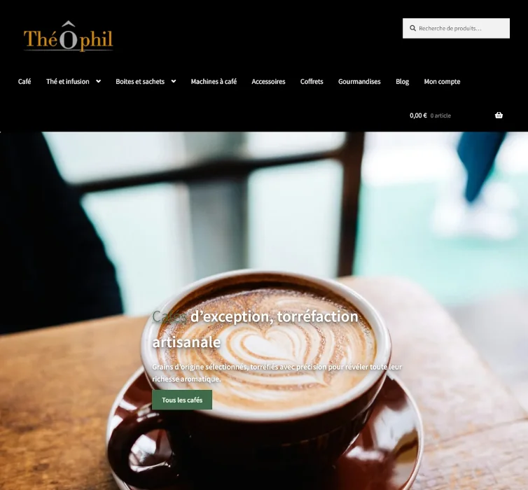
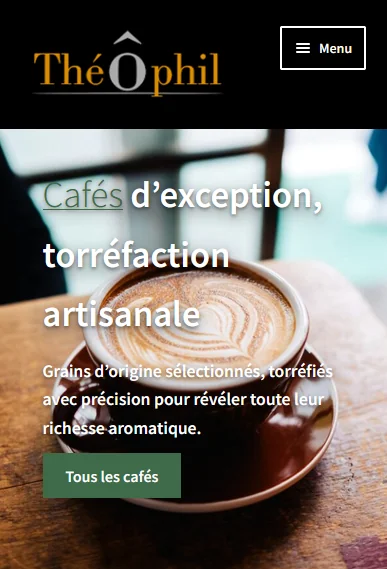

Une boutique en ligne pour ThéÔphil, commerce de thés et cafés à Nantes.
J’ai conçu et mis en ligne le site avec WordPress et WooCommerce : catalogue, fiches produits, commande et version mobile.


Le contexte
ThéÔphil est un commerce indépendant de thés et cafés à Nantes. Il voulait une boutique en ligne pour présenter ses produits et permettre de commander aussi bien sur ordinateur que sur mobile.
Le site devait rester simple à administrer au quotidien : catalogue et commandes se gèrent sans développeur. J’ai donc choisi WordPress et WooCommerce, une solution éprouvée que le commerçant prend en main facilement.
Ce que j’ai fait
- Mise en place de WordPress
- Structure du site et pages nécessaires au parcours d’achat.
- Configuration de WooCommerce
- Catalogue, fiches produits et processus de commande.
- Personnalisation graphique
- Interface adaptée à l’identité du commerce, avec un travail sur la lisibilité.
- Version mobile
- Pages ajustées pour une navigation confortable sur smartphone, tablette et ordinateur.
- SEO technique de base
- Structure des pages, métadonnées et éléments nécessaires à l’indexation.
- Mise en ligne
- Préparation et publication du site pour les clients de la boutique.
Un projet du même genre ?
Site vitrine, boutique en ligne ou fonctionnalité sur mesure : décrivez-moi votre besoin en quelques lignes et je vous dirai quelle solution me semble la plus adaptée.
M’écrire